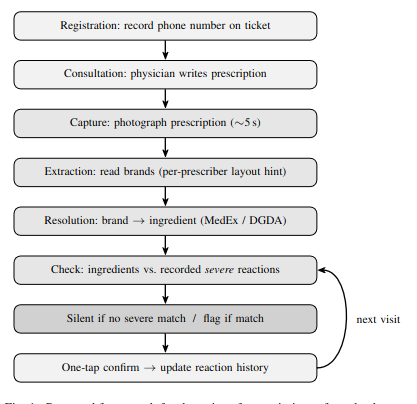
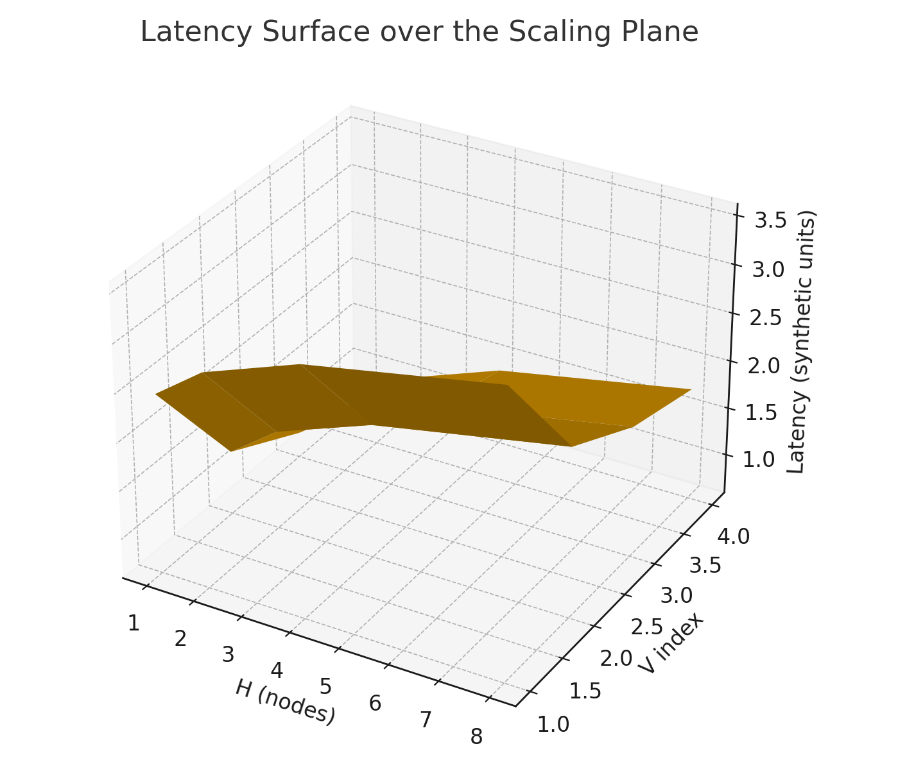
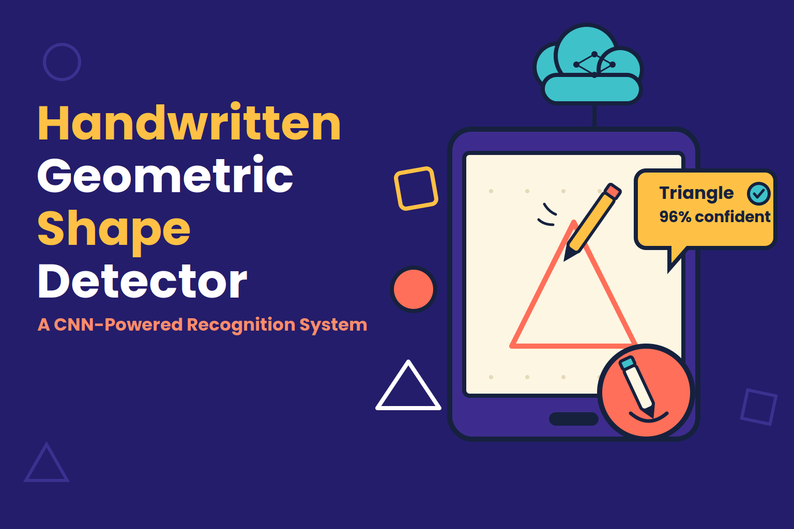
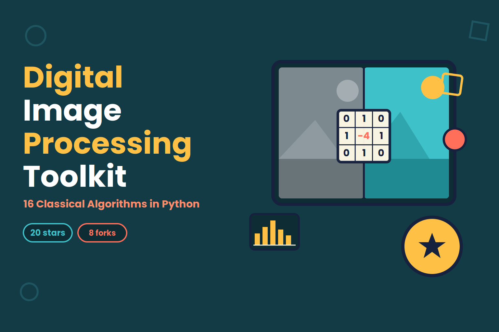

|
Shahir Abdullah
Pursuing thesis based Master's in CSE at United International University (UIU), Bangladesh; |
{kind=link}
Research InterestsI'm interested in AI/ML, Optimization, HCI, Deep learning, Distributed systems, Cloud computing, UI Automation, Generative AI. |
Publications & Research Projects |
|
 |
A Point-of-Prescription
Safety-Check System for Adverse Drug Reactions in
Rural Bangladeshi Hospitals: A Feasibility Study
Shahir Abdullah arXiv A lightweight, smartphone-based safety-check system. At registration a soft identifier (a phone number) is recorded; after the physician writes a prescription, its image is captured, the brand names are resolved to active ingredients using national drug references, and the ingredients are matched against the patient's recorded severe reaction history. The system is retrieval-based rather than predictive, and is silent by default, raising a flag only for high-risk matches. |
|
 |
Diagonal Scaling: A
Multi-Dimensional Resource Model and Optimization
Framework for Distributed Databases
Shahir Abdullah Rohit Zaman, arXiv A two-dimensional model in which each distributed database configuration is represented as a point (H, V), with H denoting node count and V a vector of resources. |
|
 |
A Lightweight
Convolutional Neural Network for Real-Time Recognition of Hand-Drawn Geometric Shapes
Shahir Abdullah, code / Researchgate / demo A desktop application that recognizes four basic hand-drawn geometric shapes, circle, square, rectangle, and triangle using a compact Convolutional Neural Network (CNN). |
Graduate, Undergraduate and Personal Projects |
|
|
App-based
Bangla Book Reader System for The Blind (Capstone Project)
Shariar Azad, Muhammad Zubair Hasan, Shahir Abdullah, Nazifa Hamid, Takik Hasan Undergraduate Capstone Project, Nov 2019 - Jan 2021 code / demo / slides / paper / reports Android app that takes pictures of book pages, converts image to text using EfficientNetB3 model, and converts to speech |
|
|
Designing a Social Website
for Mentally Challenged
People
Shariar Azad, Muhammad Zubair Hasan, Shahir Abdullah, Nazifa Hamid, Takik Hasan Undergraduate System Design Course Project, Feb 2020 - July 2020 slides / report System Analysis, Design & Development course project featuring emergency help, restricted internet access, video calls, messaging, file sharing, and discussion sessions with mental health experts. |

|
Image
Compression and Watermarking Tool Using Java
Muhammad Zubair Hasan, Shahir Abdullah Undergraduate Java Course Project, July 2018 - Nov 2018 code / slides / report Comprehensive Java tool implementing lossless compression (RLE, DPCM, predictive encoding, entropy encoding, Huffman encoding), lossy compression (DCT, wavelet transform), and steganography watermarking for image encoding. |
|
 |
Image
Processing Library
Shahir Abdullah Undergraduate DIP Course Project, July 2020 - Sep 2020 code / report An open-source Python toolkit implementing sixteen classical digital image processing techniques spanning intensity transformations, histogram-based processing, spatial (neighborhood) filtering, and edge detection. Each technique is implemented as a self-contained Jupyter notebook using NumPy, OpenCV, and Matplotlib, with several notebooks pairing a from-scratch, pixel-loop implementation against OpenCV's built-in equivalent for validation. |
Miscellaneous |
Entrepreneurial work |
Co-founder & Lead Frontend dev - VocabPractice
& GrammarPractice bootstrapped EdTech platforms serving 50,000+ users and generating ~$100K ARR |
Achievements |
Runner up @ National Robotech Festival 2017,
MIST Runner up @ Intra University Idea Hamsters 2018, MIST Underwater drone competition, UIU |
Certifications |
Coursera Advanced
Generative Adversarial Networks
Coursera Fundamentals of Reinforcement Learning Coursera Basic Generative Adversarial Networks |
|
Template stolen from Jon Barron's Site. |